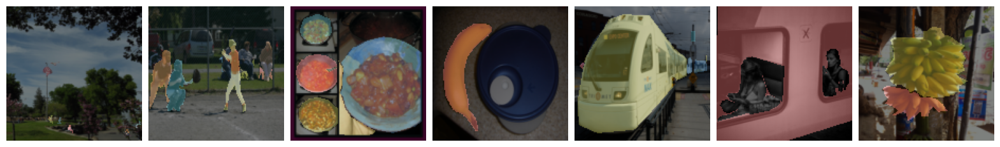

Object-centric representations hold the potential to significantly improve the generalization capabilities of computer vision models through their ability to factorize and represent a scene as the composition of objects. Despite growing interest, most slot-based models still struggle on scenes with complex textures and on real world images. In this project we attempt improve slot-based methods by applying the variance and covariance losses from VICReg as a regularizer to constrict the bottleneck of the architecture. While the results are not perfect, they demonstrate that this method is promising and worth exploring.
We propose the addition of a MLP projection head \(h_{\phi}:\mathbb{R}^{D_{slots}} \to \mathbb{R}^{D_{proj}}\) where \(D_{proj} \gg D_{slots}\) (see Figure below). In this projection space, we will compute the variance and covariance losses: \[ v(Z) = \frac{1}{D_{proj}} \sum_{j=1}^{D_{proj}} \max\left(0, \gamma - \sqrt{Var(z_j) + \epsilon}\right) \] $$c(Z) = \frac{1}{D_{proj}} \sum_{i \neq j} [Cov(Z)]^2_{i, j}$$ where \(z_j\) is the \(j^{th}\) dimension of the projection space, \(\gamma\) is a hyperparameter representing the desired variance for each feature, and \(\epsilon\) is a small scalar included for numerical stability. Covariance is calculated over the features of the projection space, giving a covariance matrix of size \(D_{proj} \times D_{proj}\). The total loss function for our method is: $$\mathcal{L}(X, \hat{X}) = \left\|X - \hat{X}\right\|^2_2 + \beta\left(v(Z) + c(Z)\right)$$ where \(X\) is an input image, \(\hat{X}\) is the reconstruction, \(Z\) is the projection of the slot representations for \(X\) through \(h_{\phi}\), and \(\beta\) is a hyperparameter that weights the variance and covariance losses and dictates the strength of the information bottleneck. Empirically we found that variance loss is not helpful, thus we did not use it in the final experiments. In addition to Cov Loss, we test another loss called Cosine Loss: $$ cosine(Z) = \sum_{i=1}^{D_{slots}}\sum_{j=1}^{D_{slots}} \mathbb{I}[i \neq j] cosemb(z_i, z_j) $$ where \(cosemb(z_i, z_j) = \max(0, \cos(z_i, z_j)-0.2)\). This loss is similar to the InfoNCE loss infonce, and the intuition is to encourage the model to make embeddings of slots far from each other. Please check the paper for detailed explanation of the losses.
| ColoredMdSprites | COCO | |
|---|---|---|
| Baseline | 90.71 | 20 |
| CovLoss | 87.42 | 29.55 |
| CosineLoss | 88.82 | 34.23 |
| Shape (acc.) |
Color (\(R^2\)) |
Scale (\(R^2\)) |
X (\(R^2\)) |
Y (\(R^2\)) |
|
|---|---|---|---|---|---|
| Baseline | 0.8472 | 0.9485 | 0.7865 | 0.9734 | 0.9726 |
| CovLoss | 0.8438 | 0.9359 | 0.7675 | 0.9641 | 0.9694 |
| CosineLoss | 0.8984 | 0.9199 | 0.8124 | 0.9592 | 0.9626 |

A. Bardes, J. Ponce, and Y. LeCun. VICReg: Variance-Invariance-Covariance Regularization for Self-Supervised Learning. arXiv:2105.04906, 2021.
O. Biza, S. van Steenkiste, M. S. M. Sajjadi, G. F. Elsayed, A. Mahendran, and T. Kipf. Invariant Slot Attention: Object Discovery with Slot-Centric Reference Frames. arXiv:2302.04973, 2023.
X. Chen and K. He. Exploring Simple Siamese Representation Learning. arXiv:2011.10566, 2020.
Deepmind. Multi-object datasets. github.com/deepmind/multi_object_datasetsmulti-dsprites.
A. Dittadi, S. Papa, M. D. Vita, B. Schölkopf, O. Winther, and F. Locatello. Generalization and Robustness Implications in Object-Centric Learning. arXiv:2107.00637, 2021.
G. F. Elsayed, A. Mahendran, S. van Steenkiste, K. Greff, M. C. Mozer, and T. Kipf. SAVi++: Towards End-to-End Object-Centric Learning from Real-World Videos. arXiv:2206.07764, 2022.
A. Goyal and Y. Bengio. Inductive Biases for Deep Learning of Higher-Level Cognition. arXiv:2011.15091, 2020.
K. Greff, S. van Steenkiste, and J. Schmidhuber. On the Binding Problem in Artificial Neural Networks. arXiv:2012.05208, 2020.
J.-B. Grill, F. Strub, F. Altché, C. Tallec, P. H. Richemond, E. Buchatskaya, C. Doersch, B. A. Pires, Z. D. Guo, M. G. Azar, B. Piot, K. Kavukcuoglu, R. Munos, and M. Valko. Bootstrap your own latent: A new approach to self-supervised Learning. arXiv:2006.07733, 2020.
I. Higgins, L. Matthey, A. Pal, C. Burgess, X. Glorot, M. Botvinick, S. Mohamed, and A. Lerchner. Beta-VAE: Learning Basic Visual Concepts With a Constrained Variational Framework, 2017. URL http://openreview.net/pdf?id=Sy2fzU9gl.
L. Karazija, I. Laina, and C. Rupprecht. ClevrTex: A Texture-Rich Benchmark for Unsupervised Multi-Object Segmentation. arXiv:2111.10265, 2021.
T. Kipf, E. van der Pol, and M. Welling. Contrastive Learning of Structured World Models. arXiv:1911.12247, 2019.
T. Kipf, G. F. Elsayed, A. Mahendran, A. Stone, S. Sabour, G. Heigold, R. Jonschkowski, A. Doso-vitskiy, and K. Greff. Conditional Object-Centric Learning from Video. arXiv:2111.12594, 2021.
T. Lin, M. Maire, S. J. Belongie, L. D. Bourdev, R. B. Girshick, J. Hays, P. Perona, D. Ramanan, P. Doll’a r, and C. L. Zitnick. Microsoft COCO: common objects in context. CoRR, abs/1405.0312, 2014. URL http://arxiv.org/abs/1405.0312.
F. Locatello, D. Weissenborn, T. Unterthiner, A. Mahendran, G. Heigold, J. Uszkoreit, A. Dosovitskiy, and T. Kipf. Object-Centric Learning with Slot Attention. arXiv:2006.15055, 2020.
S. Papa, O. Winther, and A. Dittadi. Inductive Biases for Object-Centric Representations in the Presence of Complex Textures. arXiv:2204.08479, 2022.
E. Racah and S. Chandar. Slot Contrastive Networks: A Contrastive Approach for Representing Objects. arXiv:2007.09294, 2020.
M. Seitzer, M. Horn, A. Zadaianchuk, D. Zietlow, T. Xiao, C.-J. Simon-Gabriel, T. He, Z. Zhang, B. Schölkopf, T. Brox, and F. Locatello. Bridging the Gap to Real-World Object-Centric Learning. arXiv:2209.14860, 2022.
G. Singh, F. Deng, and S. Ahn. Illiterate DALL-E Learns to Compose. arXiv:2110.11405, 2021.
G. Singh, Y.-F. Wu, and S. Ahn. Simple Unsupervised Object-Centric Learning for Complex and Naturalistic Videos. arXiv:2205.14065, 2022.
A. van den Oord, Y. Li, and O. Vinyals. Representation Learning with Contrastive Predictive Coding, 2019. 8
S. van Steenkiste, K. Greff, and J. Schmidhuber. A Perspective on Objects and Systematic General-ization in Model-Based RL. arXiv:1906.01035, 2019.
M. Wysocza ́nska, T. Monnier, T. Trzci ́nski, and D. Picard. Towards unsupervised visual reasoning: Do off-the-shelf features know how to reason?, 2022.